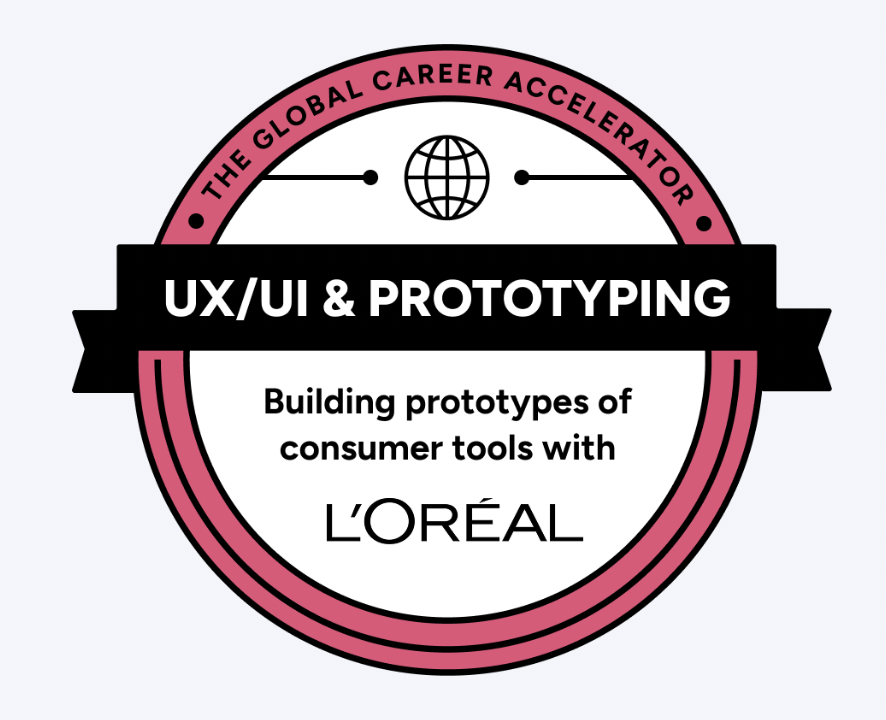
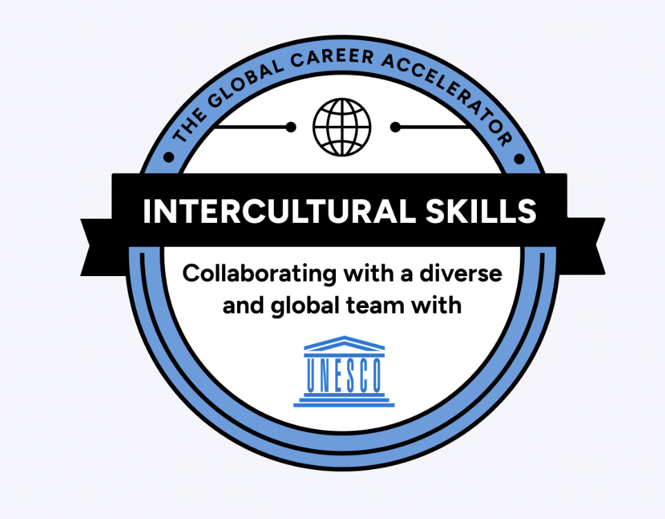
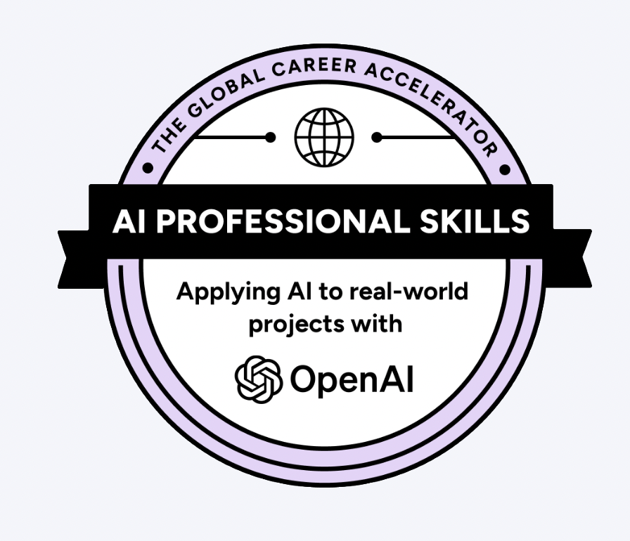

Hello! My name is Ghania Rashid, and I am a student studying Biology at University of California Riverside (UCR), working on completing my Bachelor of Science in Biology degree. My passion lies in science, education, technology, and making a difference in the world around me. My education and work experience have allowed me to acquire valuable skills in communication, problem-solving, organization, and technical fields. I have become a better person and a better professional as a result of my experiences.
Prior to being admitted to UCR, I attended Moreno Valley College, where I received my degree in Associate of Arts in Social and Behavioral Studies and Associate of Science in Math and Science. My educational background has provided me with analytical skills, scientific knowledge, and creative approaches to problem-solving. As I continue my education, I am eager to learn and improve my knowledge and skills that will help me in my future career endeavors.
Being a Math Specialist with AmeriCorps from August 2023 to December 2024 is one of the most memorable experiences of my work life. I conducted structured tutoring sessions to assist students in understanding mathematical concepts better and improving their performance in school. I tracked students' progress and kept records of their evaluations. In addition, I cooperated with the coach at the school to find ways of delivering effective teaching. The experience developed my patience, leadership, communication skills, and willingness to adapt to learning styles of different students. Most importantly, it helped me support students in their studies.
Besides my career in education, I am now an Assistant in the Wholesale Automotive sector at Royal Imports, Fullerton, California. My job includes creating financial documents, filling out the paperwork for title transfer at DMV, making appointments with customers, liaising with financing establishments, and performing other administrative functions.
Previously, I worked as a Customer Service Representative at Starcrust Product of California, where I assisted customers through phone and email communication, addressed concerns, and supported sales operations. This experience taught me the importance of professionalism, teamwork, and providing excellent customer service while maintaining positive relationships with clients.
In addition to my experience in education and my profession, I discovered an interest in web development and technology. For example, in July 2025, I designed a responsive landing page for charity: water with HTML and CSS. The landing page aimed to raise awareness about the world’s water crisis and encourage students to get involved. This experience combined my creative skills and technical knowledge.
Being multilingual in English, Urdu, Hindi, and Punjabi and having experience with Microsoft and educational programs allowed me to succeed in my career. I believe that through continuous education, hard work, and ability to adapt, a person can achieve their goals.
In the future, I expect to build on my academic background in biology, education, and technology and to apply my knowledge to make a difference.
• Prepared financial documents and processed DMV title transfers for vehicle purchases.
• Scheduled and coordinated client appointments for vehicle sales.
• Communicated with financial institutions regarding lien releases and documentation.
• Provided administrative support for wholesale automotive transactions.
• Led tutoring sessions to improve students' mathematical understanding and academic performance.
• Monitored student progress through assessments and data entry.
• Collaborated with an on-site coach to improve teaching strategies.
• Participated in training sessions to strengthen instructional skills.
• Responded to customer inquiries through phone and email.
• Resolved customer concerns professionally and efficiently.
• Supported sales operations while maintaining customer satisfaction.
• Maintained knowledge of products and company guidelines.


